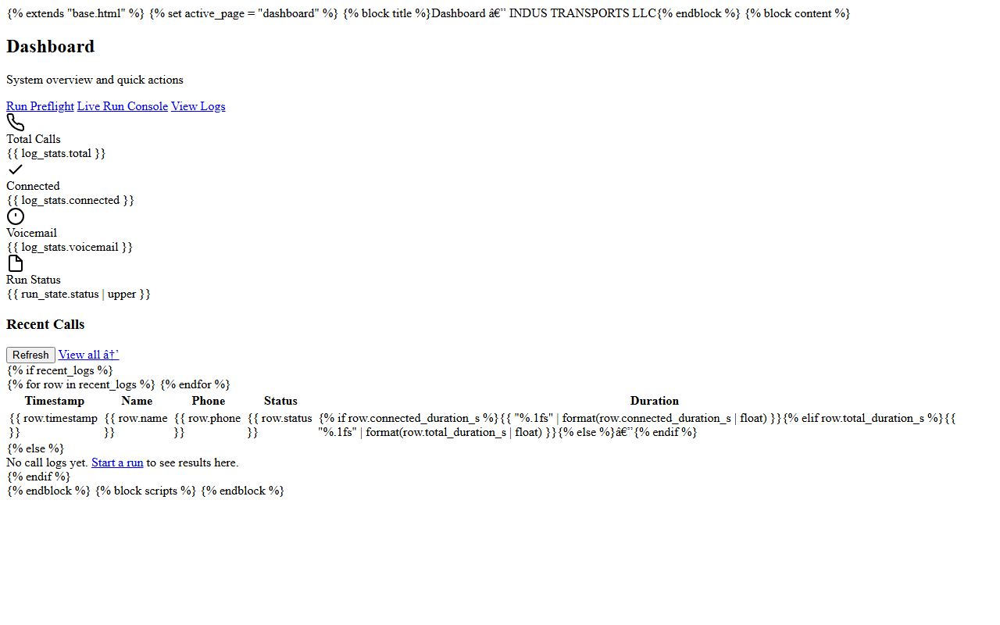

What does the AI call agent work include?
Public projects cover Groq call scripts, local text-to-speech, call-state detection, call auditing, and a voice agent. See google-voice-dispatch-agent, tony-ai-agent, and CallAudit-X.
Home / Services / AI Call Agent Developer
Muhammad Afzal Kalwar is an AI call agent developer in Islamabad, Pakistan. He is available remote for US/UK/EU teams that need call scripts, voice tools, or call review software.

The Google Voice Dispatch Agent uses Selenium with Groq-written call scripts, local text-to-speech, and voicemail handling. Tony AI Agent is a separate voice project using Groq with Deepgram and ElevenLabs. CallAudit-X covers transcription, scoring, and review workflows. None of these pages invent close rates or headcount.
Browser dialers from INDUS Web Agency sit next to this work when the call still starts in Chrome.
Groq-generated scripts inside the Google Voice dispatch console.
Tony AI Agent, with Groq plus Deepgram and ElevenLabs voice.
CallAudit-X for transcription, quality scoring, and review queues.
Call-state detection prototypes and the Indus Web Reviewer dashboard.
Dialer extensions on the Chrome Web Store that sit beside this call work:
Public projects cover Groq call scripts, local text-to-speech, call-state detection, call auditing, and a voice agent. See google-voice-dispatch-agent, tony-ai-agent, and CallAudit-X.
Yes. He is an AI call agent developer in Islamabad, Pakistan, and he is available remote for US/UK/EU.